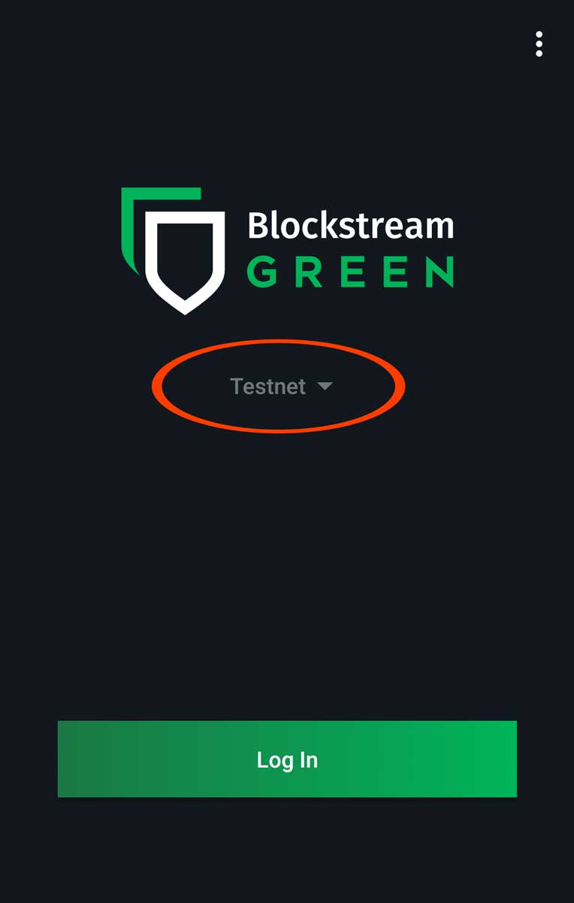

Workshop: Introduction to Cryptocurrencies
In this workshop you will learn the basics of how to use cryptocurrencies: how to send and receive them to your wallet, how to exchange them for traditional currencies and how to properly secure your wallet.
Wallets
Wallet software is your interface to cryptocurrency world. Wallets manage your cryptographic keys and allow you to make transactions.
There are many different wallets on the market with different functionality and trade-offs. Some wallets control keys for you and are generally simpler to use, at the expense of having to trust a third party. Others will let you be more independent but will require you to be more responsible with how you use them.
Bitcoin.org has a great comparison of wallet software.
Blockstream Green
In this workshop we will use Blockstream’s wallet. Keys are controlled exclusively by you which means you have to take care of them. It’s a lightweight wallet however because it connects to a third party server to query the blockchain. The main reason we will use it is because it supports Bitcoin’s test network (testnet), so we won’t be dealing with real money.
Securing your wallet
Nowadays most wallets that let you control your keys will ask you to write down a list of words, known as a mnemonic or seed. Using the seed, the wallet software will automatically generate all the keys you will need: each new address needs a new key. For privacy and security reasons you should generate a new address each time you receive coins and your wallet should generate a new one automatically when you are sending coins (which will be used to receive your change).
Transacting with cryptocurrencies
To send coins to someone else you will need their address. Online services will typically allow you to click a bitcoin: link or display a QR code.
A single bitcoin is worth thousands of pounds so people also use other denominations. The Satoshi is the smallest amount you can send and it’s equivalent to 10-8 bitcoins. Other common denominations are mBTC and μBTC (which some people call bits). You can calculate what an amount of bitcoins is worth in fiat currencies using websites like bitkoin.io or preev.com.
Before you send a transaction it’s good to check the fees. Choosing a too low fee might delay your transaction from being confirmed. Good wallet software will examine the network and let you choose a fee level based on how long you are willing to wait. You can also use a website like bitcoinfees.
Try out transacting by shopping at TestnetStore!
Trading cryptocurrencies for fiat money
To buy and sell cryptocurrencies you will need an account with an online exchange. Exchanges will need to verify your identity but some of them may let you trade small amounts without verification. Some reputable exchanges are CoinCorner for GBP, Bitstamp and Kraken for USD/EUR.
Coins stored in an online wallet are not truly yours and there have been many cases of theft by hackers. Only store money in an exchange wallet which you will use for trading.